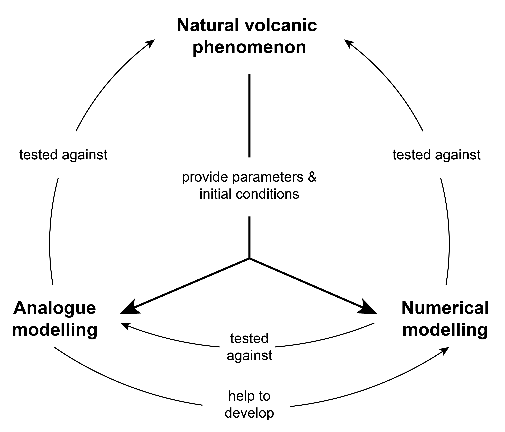

Analogue modelling of volcanic processes
Analogue modelling (also referred to as laboratory modelling) is an experimental approach that is used in the Earth Sciences to investigate geological processes in a laboratory at convenient time and length scales1. In volcanology, analogue modelling is a major tool to understand the physics of volcanic processes in complement to field, theoretical and numerical works. In fact, it is not always possible to observe volcanic phenomena, and observations do not provide directly all the information on processes, notably because volcanic eruptions and specific phenomena are relatively rare, often dangerous to study and sometimes happen in remote areas2. Moreover, natural volcanic phenomena are very complex and involve several processes simultaneously, possibly leading to equivocal interpretation of their dynamics.
The strength of laboratory experiments is to provide simple and repeatable analogue models of volcanic phenomena that involve few, well-characterised and well-controlled physical parameters. Volcanologists have therefore used analogue modelling to study many processes3. Examples are shown below.
Is a volcano made of baking soda and vinegar a good analogue model of a real volcano?
It depends on the purpose of the model. Some very simple models can help to illustrate fundamental physical processes driving volcanic phenomena (e.g., "vinegar volcanoes" illustrate the role of gases in the triggering of eruptions). The goal of these models is to visualise processes qualitatively, but analogue modelling can also be used to study these processes quantitatively, by measuring variables and assessing the influence of particular parameters on model's results. Quantitative models are widely used to understand the physics involved in natural processes.
How is it possible to learn something on natural processes from small scale analogue models?
By definition, a model never equals the complexity of the real world and is never a complete representation of the world; i.e. "all models are inherently wrong, but some are useful"24. Critical differences exist between natural processes and their laboratory analogues. In fact, for large scale natural processes such as volcanic eruptions, experimental models are inevitably spatially and temporally simplified and reduced to be conceivable at the scale of a laboratory. Even "large scale experiments" (i.e., with sizes up to several 10s of meters1618), which try to better approach natural scales, are orders of magnitude smaller than natural phenomena.
In order to assess the reliability of small-scale analogue models to simulate natural processes, and design appropriate models, experimental modellers need to ensure that laboratory experiments correctly reproduce the balance of forces acting in natural systems by conducting a scaling analysis. If the ratio of forces acting on experimental models is matching that acting on natural systems, models are dynamically similar to natural processes. Hence, the dynamics of scaled experimental models can be characteristic of much larger systems.
The relation between analogue and numerical modelling
Like other approches, analogue modelling is not sufficient to fully understand complex volcanic phenomena alone. Multidisciplinary efforts, including field observations, numerical modelling, and analogue modelling are therefore classically used in volcanology. Observations and measurements from natural volcanic phenomena provide the parameters and initial conditions for analogue and numerical models. These models are then tested against nature, with analogue models also aiding the development of numerical models3.

Objectives
The objectives of this lesson are to:
- Define analogue modelling and present its uses in volcanology
- Introduce the importance of scaling analysis
- Give an example of analogue modelling for pyroclastic density currents
References
-
Schellart, W. P., & Strak, V. (2016). A review of analogue modelling of geodynamic processes: Approaches, scaling, materials and quantification, with an application to subduction experiments. Journal of Geodynamics, 100, 7-32. ↩
-
Roche, O., & Carazzo, G. (2019). The contribution of experimental volcanology to the study of the physics of eruptive processes, and related scaling issues: A review. Journal of Volcanology and Geothermal Research, 384, 103-150. ↩
-
Kavanagh, J. L., Engwell, S. L., & Martin, S. A. (2018). A review of laboratory and numerical modelling in volcanology. Solid Earth, 9(2), 531-571. ↩↩
-
Woods, A. W., & Cowan, A. (2009). Magma mixing triggered during volcanic eruptions. Earth and Planetary Science Letters, 288(1-2), 132-137. ↩
-
Huppert, H. E., & Sparks, R. S. J. (1988). The generation of granitic magmas by intrusion of basalt into continental crust. Journal of Petrology, 29(3), 599-624. ↩
-
Chanceaux, L., & Menand, T. (2014). Solidification effects on sill formation: An experimental approach. Earth and Planetary Science Letters, 403, 79-88. ↩
-
Manta, F., Emadzadeh, A., & Taisne, B. (2019). New Insight Into a Volcanic System: Analogue Investigation of Bubble‐Driven Deformation in an Elastic Conduit. Journal of Geophysical Research: Solid Earth, 124(11), 11274-11289. ↩
-
Deegan,F. M. (2010). Processes of Magma-crust Intereaction. Insights from Geochemistry and Experimental Petrology. Acta Universitatis Upsaliensis. Digital Comprehensive Summaries of Uppsala Dissertations from the Faculty of Science and Technology 777. ↩
-
Loomis, I. (2018), Faster lava flows, explosive eruptions begin at Kīlauea, Eos, 99, https://doi.org/10.1029/2018EO099655. ↩
-
Kerr, R. C., Griffiths, R. W., & Cashman, K. V. (2006). Formation of channelized lava flows on an unconfined slope. Journal of Geophysical Research: Solid Earth, 111(B10). ↩
-
Castruccio, A., Rust, A. C., & Sparks, R. S. J. (2014). Assessing lava flow evolution from post-eruption field data using Herschel–Bulkley rheology. Journal of Volcanology and Geothermal Research, 275, 71-84. ↩
-
Edwards, B. R., Karson, J., Wysocki, R., Lev, E., Bindeman, I., & Kueppers, U. (2013). Insights on lava–ice/snow interactions from large-scale basaltic melt experiments. Geology, 41(8), 851-854. ↩
-
Griffiths, R. W., & Fink, J. H. (1997). Solidifying Bingham extrusions: a model for the growth of silicic lava domes. Journal of Fluid Mechanics, 347, 13-36. ↩
-
Morton, B. R., Taylor, G. I., & Turner, J. S. (1956). Turbulent gravitational convection from maintained and instantaneous sources. Proceedings of the Royal Society of London. Series A. Mathematical and Physical Sciences, 234(1196), 1-23. ↩
-
Chojnicki, K. N., Clarke, A. B., Phillips, J. C., & Adrian, R. J. (2015). Rise dynamics of unsteady laboratory jets with implications for volcanic plumes. Earth and Planetary Science Letters, 412, 186-196. ↩
-
Dellino, P., Büttner, R., Dioguardi, F., Doronzo, D. M., La Volpe, L., Mele, D., Sonder, I., Sulpizio, R., & Zimanowski, B. (2010). Experimental evidence links volcanic particle characteristics to pyroclastic flow hazard. Earth and Planetary Science Letters, 295(1-2), 314-320. ↩↩
-
Sher, D., & Woods, A. W. (2017). Experiments on mixing in pyroclastic density currents generated from short-lived volcanic explosions. Earth and Planetary Science Letters, 467, 138-148. ↩
-
Lube, G., Breard, E. C. P., Cronin, S. J., & Jones, J. (2015). Synthesizing large‐scale pyroclastic flows: Experimental design, scaling, and first results from PELE. Journal of Geophysical Research: Solid Earth, 120(3), 1487-1502. ↩↩
-
Fries, A., Roche, O., & Carazzo, G. (2021). Granular mixture deflation and generation of pore fluid pressure at the impact zone of a pyroclastic fountain: Experimental insights. Journal of Volcanology and Geothermal Research, 414, 107226. ↩
-
Carazzo, G., Girault, F., Aubry, T., Bouquerel, H., & Kaminski, E. (2014). Laboratory experiments of forced plumes in a density‐stratified crossflow and implications for volcanic plumes. Geophysical Research Letters, 41(24), 8759-8766. ↩
-
Carazzo, G., & Jellinek, A. M. (2012). A new view of the dynamics, stability and longevity of volcanic clouds. Earth and Planetary Science Letters, 325, 39-51. ↩
-
Fries, A., Lemus, J., Jarvis, P. A., Clarke, A. B., Phillips, J. C., Manzella, I., & Bonadonna, C. (2021). The Influence of Particle Concentration on the Formation of Settling-Driven Gravitational Instabilities at the Base of Volcanic Clouds. Frontiers in Earth Science, 407. ↩
-
Manville, V., & Wilson, C. J. N. (2004). Vertical density currents: a review of their potential role in the deposition and interpretation of deep-sea ash layers. Journal of the Geological Society, 161(6), 947-958. ↩
-
Van Zelst, I., Crameri, F., Pusok, A. E., Glerum, A., Dannberg, J., & Thieulot, C. (2022). 101 geodynamic modelling: how to design, interpret, and communicate numerical studies of the solid Earth. Solid Earth, 13(3), 583-637. ↩